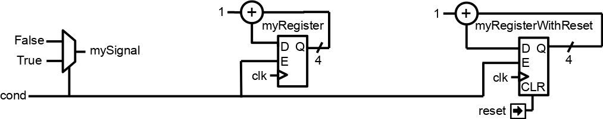

前言
初步说明：
以下所有陈述都是关于描述数字硬件电路的。验证是另一个有趣的话题。
为了简洁，我们假设SystemVerilog是Verilog的最新版本。
When reading this, we should not underestimate how much our attachment for our favorite HDL will bias our judgement.
为什么要放弃传统的 HDL
VHDL/Verilog 不是硬件描述语言
这些语言最初是为了模拟/文档目的而创建的事件驱动语言。只有在后来，它们才被用作综合工具的输入语言。这就解释了以下许多观点的根源。
事件驱动范式对于 RTL 没有任何意义
仔细想想，使用 process/always 块描述数字硬件 (RTL) 没有任何实际意义。为什么我们必须担心敏感列表？为什么我们必须在不同性质的进程(process)/always块之间分割我们的设计（组合逻辑/不带复位的寄存器/带异步复位的寄存器）？
例如，要实现这个：
使用 VHDL 流程，您可以编写以下内容：
signal mySignal : std_logic;
signal myRegister : unsigned(3 downto 0);
signal myRegisterWithReset : unsigned(3 downto 0);
process(cond)
begin
mySignal <= '0';
if cond = '1' then
mySignal <= '1';
end if;
end process;
process(clk)
begin
if rising_edge(clk) then
if cond = '1' then
myRegister <= myRegister + 1;
end if;
end if;
end process;
process(clk,reset)
begin
if reset = '1' then
myRegisterWithReset <= 0;
elsif rising_edge(clk) then
if cond = '1' then
myRegisterWithReset <= myRegisterWithReset + 1;
end if;
end if;
end process;
使用 SpinalHDL 你可以这样写：
val mySignal = Bool()
val myRegister = Reg(UInt(4 bits))
val myRegisterWithReset = Reg(UInt(4 bits)) init(0)
mySignal := False
when(cond) {
mySignal := True
myRegister := myRegister + 1
myRegisterWithReset := myRegisterWithReset + 1
}
所有事情都是这样，您可以习惯这种事件驱动的语义，直到您尝试更好的事物。
VHDL 和 Verilog 的最新版本不可用
EDA 行业在其工具中实现 VHDL 2008 和 SystemVerilog 综合功能的速度确实很慢。此外，当它完成时，似乎只实现了该语言的一个约束子集（不谈论仿真功能）。结果是使用这些语言修订版的任何有趣功能都不安全，因为：
它可能会使您的代码与许多 EDA 工具不兼容。
其他公司可能不会接受您的 IP，因为他们的流程尚未准备好。
无论如何，这些修订并没有改变 HDL 问题的核心：它们基于事件驱动范的范式，这对于描述数字硬件没有意义。
VHDL 结构记录（record），Verilog 结构（struct）已经破碎（SystemVerilog 在这方面很好，如果您可以使用它）
您不能使用它们来定义接口，因为您无法定义它们的内部信号方向。更糟糕的是，您无法向他们提供构造参数！因此，只能一次性定义好 RGB 记录/结构，但愿您永远不必将其与不同大小的颜色通道一起使用……
VHDL 的另一个奇特之处是，如果您想将某个数组添加到组件实体中，则必须将该数组的类型定义到包中…这就不能参数化了…
例如，下面是 SpinalHDL APB3 总线定义：
// Class which can be instantiated to represent a given APB3 configuration
case class Apb3Config(
addressWidth : Int,
dataWidth : Int,
selWidth : Int = 1,
useSlaveError : Boolean = true
)
// Class which can be instantiated to represent a given hardware APB3 bus
case class Apb3(config: Apb3Config) extends Bundle with IMasterSlave {
val PADDR = UInt(config.addressWidth bits)
val PSEL = Bits(config.selWidth bits)
val PENABLE = Bool()
val PREADY = Bool()
val PWRITE = Bool()
val PWDATA = Bits(config.dataWidth bits)
val PRDATA = Bits(config.dataWidth bits)
val PSLVERROR = if(config.useSlaveError) Bool() else null // Optional signal
// Can be used to setup a given APB3 bus into a master interface of the host component
// `asSlave` is automatically implemented by symmetry
override def asMaster(): Unit = {
out(PADDR, PSEL, PENABLE, PWRITE, PWDATA)
in(PREADY, PRDATA)
if(config.useSlaveError) in(PSLVERROR)
}
}
然后VHDL 2008有部分的解决方案和SystemVerilog接口/modport也能有所帮助，如果您的EDA工具/公司流程/公司政策允许您使用它们，那么您很幸运。
VHDL 和 Verilog 太冗长了
对于VHDL和Verilog，当它开始涉及组件实例化互连时，必须使用Ctrl-V/C大法。
要更深入地理解它，下面是一个使用SpinalHDL实例化一些外设并添加用于访问它们所需的APB3解码器的示例。
// Instantiate an AXI4 to APB3 bridge
val apbBridge = Axi4ToApb3Bridge(
addressWidth = 20,
dataWidth = 32,
idWidth = 4
)
// Instantiate some APB3 peripherals
val gpioACtrl = Apb3Gpio(gpioWidth = 32)
val gpioBCtrl = Apb3Gpio(gpioWidth = 32)
val timerCtrl = PinsecTimerCtrl()
val uartCtrl = Apb3UartCtrl(uartCtrlConfig)
val vgaCtrl = Axi4VgaCtrl(vgaCtrlConfig)
// Instantiate an APB3 decoder
// - Driven by the apbBridge
// - Map each peripheral in a memory region
val apbDecoder = Apb3Decoder(
master = apbBridge.io.apb,
slaves = List(
gpioACtrl.io.apb -> (0x00000, 4 KiB),
gpioBCtrl.io.apb -> (0x01000, 4 KiB),
uartCtrl.io.apb -> (0x10000, 4 KiB),
timerCtrl.io.apb -> (0x20000, 4 KiB),
vgaCtrl.io.apb -> (0x30000, 4 KiB)
)
)
完成。这就是所有内容。在实例化模块/组件时，你不必一个接一个地绑定信号，因为你可以以面向对象的方式访问它们的接口。
另外，关于 VHDL/Verilog 结构/记录，可以说它们确实是无用的，没有真正的参数化和可重用性功能，仅仅是试图掩盖这些语言设计不佳的事实。
元硬件描述能力
VHDL 和 Verilog 提供了一些实例细化工具，这些工具不会直接映射到硬件中，如循环/生成语句/宏/函数/过程/任务。但仅此而已。
即便如此，它们的作用也确实有限。例如，不能将进程/always块/组件/模块块定义到任务/过程中。这确实是许多高级功能的瓶颈。
使用 SpinalHDL，您可以在总线上调用用户定义的任务/过程，如下所示：myHandshakeBus.queue(depth=64)。下面是一些包含定义的代码。
// Define the concept of handshake bus
class Stream[T <: Data](dataType: T) extends Bundle {
val valid = Bool()
val ready = Bool()
val payload = cloneOf(dataType)
// Define an operator to connect the left operand (this) to the right operand (that)
def >>(that: Stream[T]): Unit = {
that.valid := this.valid
this.ready := that.ready
that.payload := this.payload
}
// Return a Stream connected to this via a FIFO of depth elements
def queue(depth: Int): Stream[T] = {
val fifo = new StreamFifo(dataType, depth)
this >> fifo.io.push
return fifo.io.pop
}
}
让我们进一步想象，假设你想定义一个有限状态机。使用VHDL/Verilog，你需要编写大量原始代码，并使用一些switch语句来实现它。你不能定义”StateMachine”的概念，这将为你提供一个很好的语法来定义每个状态。否则，你可以使用第三方工具来绘制你的有限状态机，然后生成等价的VHDL/Verilog代码…
SpinalHDL 的元硬件描述能力使您能够定义自己的工具，然后允许您以抽象方式定义事物，例如有限状态机。
下面是SpinalHDL上有限状态机的一个简单的用法示例：
// Define a new state machine
val fsm = new StateMachine {
// Define all states
val stateA, stateB, stateC = new State
// Set the entry point
setEntry(stateA)
// Define a register used into the state machine
val counter = Reg(UInt(8 bits)) init (0)
// Define the state machine behavior for each state
stateA.whenIsActive (goto(stateB))
stateB.onEntry(counter := 0)
stateB.onExit(io.result := True)
stateB.whenIsActive {
counter := counter + 1
when(counter === 4) {
goto(stateC)
}
}
stateC.whenIsActive(goto(stateA))
}
假设你想生成CPU的指令解码逻辑。这可能需要一些复杂的实例细化时算法来生成尽可能少的逻辑。但是，在VHDL/Verilog中，你唯一的选择是用脚本生成你想要的 .vhd 和 .v 文件。
关于元硬件描述确实有很多话要说，但理解它并得其真味的唯一方法就是进行实验。它的目标是停止直接使用电线和门，与那些抽象层级较低的东西保持一定的距离，并思考可重用的方法。